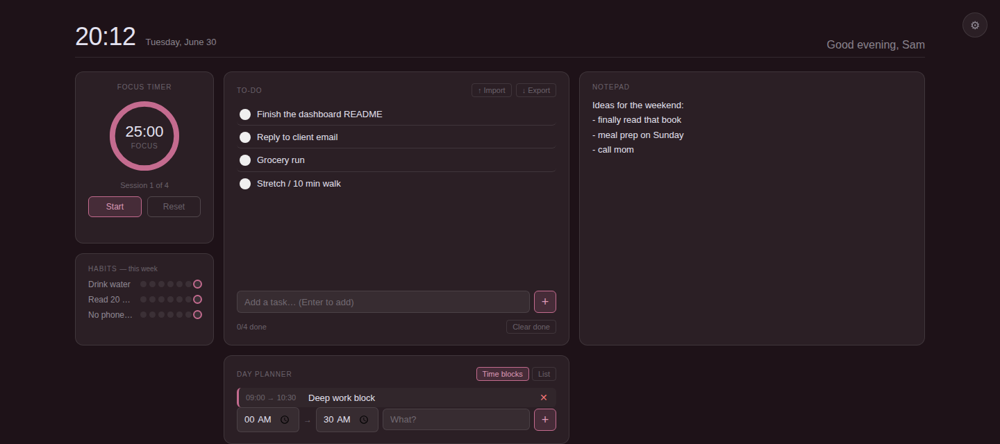
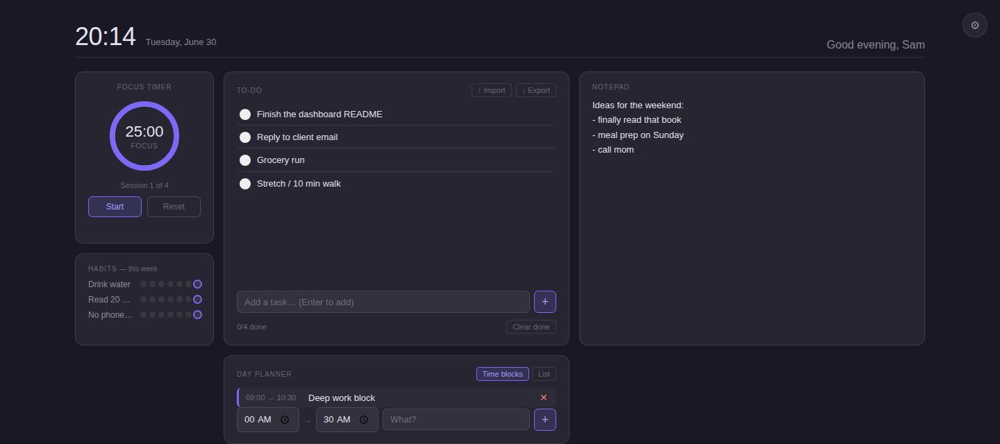

A pomodoro timer, to-do list, notepad, habit tracker, and day planner — waiting for you the moment you open a tab. Offline. No account. No tracking.

Configurable focus, break, and long-break lengths. Tracks sessions and flashes the tab title when one ends.
Add with Enter, edit inline, import or export as .txt or .csv. Clear done tasks in one click.
A plain scratch space that auto-saves as you type and persists across sessions.
A 7-day dot grid per habit. Click any dot to toggle it — today's dot gets a ring.
Time blocks or a simple ordered list, your choice. Resets fresh each day.
Pick a built-in palette or upload a personal background — stored locally, never uploaded anywhere.

Same files, same features. Pick whichever sounds easier.
chrome://extensions — works for Chrome, Brave, Arc, Opera, Vivaldi, and Avast Secure Browser. Edge uses edge://extensions. Firefox is a little different (see the README).